Experience at a Glance
Each role is presented according to a consistent scan-first pattern: company/product context, mission, key contributions, core stack, a role-specific STAR project, and an engineering deep dive.
Industrial Quality Inspection
Machine Vision Consultant
Schneider Electric | Markham, ON | Mar. 2026 – Present
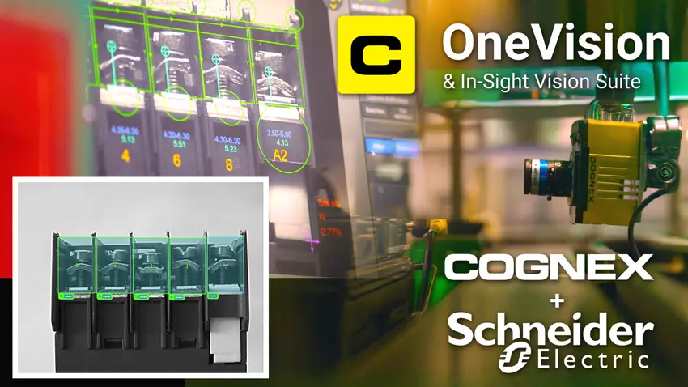
Company / Product Context
EVQC applies deep-learning algorithms with standard industrial cameras to detect defects, verify assembly, and automate quality control in real time.
My Mission
Support the design of real-world end-to-end machine vision systems, optimizing specialized hardware and the intelligent software engine for robust industrial inspection.
Key Contributions
- Bridged customer requirements, optical imaging, CV/AI algorithms, and system-level design for production machine vision.
- Led the technical synthesis of a fiber-cement-board inspection proposal under a one-week deadline; the proposal was delivered on time and the company was awarded the manufacturing contract.
- Applied a layered engineering approach spanning lighting, optics, cameras, conventional CV, deep learning, software, and deployment constraints.
Core Stack
Sample STAR Project — Fiber-Cement Board Inspection System Proposal
Situation
A manufacturer needed an automated machine-vision solution for inspecting large fiber-cement boards, with defect-detection requirements spanning imaging hardware, motion, lighting, CV/AI processing, system integration, and production constraints. The technical proposal had to be completed within one week.
Task
Define a credible end-to-end inspection architecture and translate incomplete customer requirements into a practical hardware/software design that could be evaluated for manufacturing deployment.
Action
Structured the problem from defect size and field of view through camera resolution, line-rate/exposure, lighting geometry, optics, preprocessing, conventional CV, deep-learning options, compute/interface needs, deployment risks, and acceptance criteria; coordinated these trade-offs into a concise technical proposal.
Result
Delivered the proposal on schedule. The architecture provided a technically defensible path from image formation to automated defect decisions, and the company was awarded the manufacturing contract.
Engineering Deep Dive & Lessons Learned
Imaging & Conventional CV
Gaussian/median filtering, histogram equalization, morphology, normalized cross-correlation, geometric alignment, and deterministic inspection logic.
AI / ML / DL
CNNs such as ResNet, MobileNet and EfficientNet; Vision Transformers; SVM and Random Forest approaches where appropriate.
Hardware
Lighting geometry and wavelength selection, cameras/sensors, lenses, field of view, resolution, working distance, and motion/exposure trade-offs.
Lessons Learned
Image quality is foundational; deterministic methods should be preferred where they solve the task reliably; lighting often dominates inspection robustness; clearly defined defect criteria control scope; successful deployment requires bridging IT/OT and managing cross-functional interfaces.
Automotive Machine Vision
Senior Computer Vision & Machine Learning Research Scientist
BL Innovare | Markham, ON | Mar. 2024 - Aug. 2025
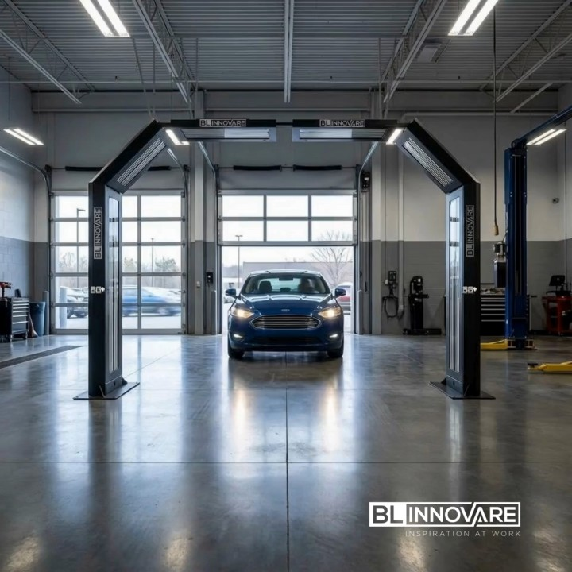
Company / Product Context
Worked on BODYGUARD, an end-to-end machine-vision inspection system for automobile exterior-body inspection using high-resolution video, with emphasis on detecting damage, scratches and dents.
My Mission
Engineer and integrate the imaging, conventional computer-vision and deep-learning components needed for robust near-real-time vehicle inspection.
- Developed and evaluated an end-to-end inspection pipeline spanning optics, image acquisition, preprocessing, vision algorithms, ML models, interfaces, visualization and logging.
- Optimized illumination, cameras/sensors, lenses/optics and adaptive ISP exposure behavior for challenging automotive inspection imagery.
- Built background modeling, change detection, object tracking and multi-camera registration/localization capabilities for vehicle analysis.
- Trained, fine-tuned and deployed object detectors for exterior damage and vehicle-body features; also supported privacy masking for faces/windows.
Core Stack
Sample STAR Project — Robust Multi-Camera Automotive Damage Inspection
Situation
Automotive exterior inspection had to detect scratches, dents, and body features from high-resolution video despite reflective paint, glare, illumination variation, vehicle motion, and multiple camera viewpoints.
Task
Improve the reliability of the BODYGUARD vision pipeline while maintaining near-real-time operation and supporting both conventional CV and learned object-detection methods.
Action
Optimized lighting, cameras, lenses, exposure/ISP behavior, and image enhancement; developed adaptive background modeling, change detection, tracking, and multi-camera registration/localization; fine-tuned YOLO/TensorFlow/Hailo/SageMaker object detectors and integrated privacy masking and result reporting.
Result
Produced an integrated inspection workflow capable of combining deterministic and learned methods for real-world vehicle analysis, with deployment, troubleshooting, and robustness considerations built into the system.
Engineering Deep Dive — Problem -> approach -> implementation evidence
Imaging & ISP
Illumination, sensors/cameras, lenses/optics, auto-exposure and image-quality enhancement including contrast, denoising, sharpening, low-light and glare reduction.
Classical CV
Adaptive background estimation, background subtraction, adaptive thresholding, morphology, template matching and OpenCV tracking (MeanShift, CamShift, MedianFlow, KCF, BOOSTING).
Multi-view geometry
Multi-camera video synchronization, frame projection/registration and localization of damage/features on the vehicle body.
Deep learning
Object detection with TensorFlow Object Detection API, Hailo AI, Ultralytics YOLO and Amazon SageMaker/MXNet; face detection/privacy masking with AWS Rekognition.
Deployment
Integrated CV pipelines into BODYGUARD for near-real-time operation, with maintenance, troubleshooting and robustness to environmental variation.
Semiconductor Metrology
Senior Imaging & Computer Vision Engineer (Contract)
QUARTZ Imaging | Vancouver, BC | Aug. 2023 - Feb. 2024
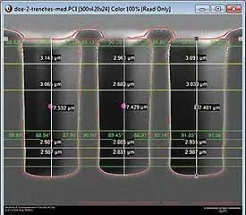
Company / Product Context
Developed conventional computer-vision pipelines for semiconductor manufacturing QA/QC using SEM and TEM microscopic imagery, supporting metrology and feature inspection at sub-nanometer measurement precision.
My Mission
Improve microscopic image quality, register image stacks, detect features and propagate measurements reliably through the QUARTZ PCI imaging workflow.
- Developed adaptive denoising and contrast-enhancement pipelines for SEM/TEM imagery.
- Implemented feature-based, correlation-based, optical-flow, rigid and non-rigid registration methods for image stacks.
- Built multi-scale template-matching and measurement-projection workflows across registered image stacks.
- Integrated, tested and maintained the developed tools inside QUARTZ PCI microscope acquisition, processing, archiving and measurement software.
Core Stack
Sample STAR Project — SEM/TEM Stack Registration and Metrology
Situation
Semiconductor QA/QC required reliable feature inspection and measurement across SEM/TEM image stacks where noise, contrast variation, local deformation, and stack misalignment could directly affect metrology.
Task
Create a robust registration-and-measurement workflow that preserved microscopic feature correspondence and supported sub-nanometer-scale manufacturing inspection requirements.
Action
Applied adaptive denoising and CLAHE, evaluated SIFT/ORB/SURF and homography-based alignment, added correlation and optical-flow registration, and used rigid/non-rigid ITK methods where needed; detected features with multi-scale template matching and propagated measurements through registered secondary images.
Result
Delivered CV components that supported repeatable feature localization and measurement within the QUARTZ PCI microscope acquisition, processing, archiving, and metrology workflow.
Engineering Deep Dive — Problem -> approach -> implementation evidence
Image quality
Non-local means, bilateral and adaptive edge-preserving denoising; brightness assessment and CLAHE.
Registration
SIFT/ORB/SURF features, homography, projection/warping, correlation, optical flow, rigid and non-rigid registration.
Inspection & metrology
Multi-scale template matching, feature detection and projection of detected feature measurements to secondary registered images.
System integration
Deployment, testing, troubleshooting and maintenance in QUARTZ PCI.
Geological Core Logging
Senior Vision & Machine Learning Engineer
KORE Geosystems | Toronto, ON | Mar. 2022 - Feb. 2023
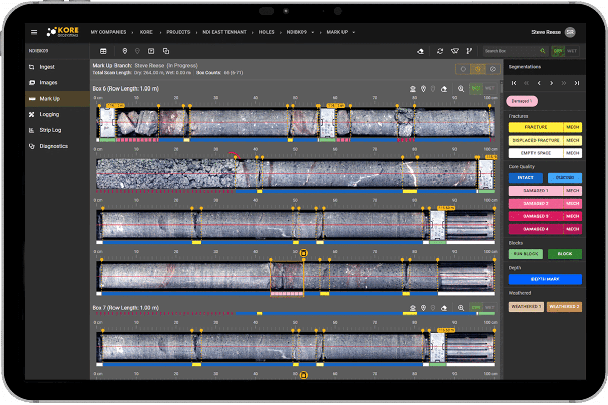
Company / Product Context
Worked on a high-resolution machine-vision system for mine-core logging and analysis, covering core imagery, segmentation, classification, ore-vein analysis and handwritten annotation recognition.
My Mission
Improve the imaging system and build CV/ML pipelines that convert core-box imagery into reliable geological measurements and machine-readable metadata.
- Optimized lighting, cameras, optics and ISP color/exposure settings for core imaging.
- Developed perspective correction, core-row segmentation and core-depth/measurement extraction pipelines.
- Built imbalanced-classification workflows using sampling methods, ensemble models, SVMs and appropriate evaluation metrics.
- Fine-tuned Mask R-CNN for ore-vein detection and integrated OCR pipelines for handwritten core annotations; presented results to customers.
Core Stack
Sample STAR Project — Automated Core-Logging and Ore-Vein Analysis
Situation
Mine-core logging relied on high-resolution core-box imagery containing perspective distortion, variable illumination, broken/solid core segments, geological structures, and handwritten annotations.
Task
Convert raw core-box imagery into structured geological information, including corrected imagery, segmented core rows, measurements, ore-vein detections, and machine-readable annotation metadata.
Action
Optimized imaging/ISP settings; implemented perspective correction, Hough/Harris/color-based segmentation and core-depth estimation; addressed class imbalance with sampling/SMOTE and ensemble/SVM models; fine-tuned Mask R-CNN for ore veins and combined EasyOCR/AWS Textract with ROI enhancement and result validation.
Result
Integrated the resulting pipelines into SPECTOR-GEO, demonstrated ore-vein detection on a large test dataset, and presented the results to customers as part of a near-real-time geological analysis workflow.
Engineering Deep Dive — Problem -> approach -> implementation evidence
Imaging
Hardware selection and adaptive ISP tuning for exposure and color correction.
Core-box CV
CLAHE, perspective correction, edges/Hough/Harris/color segmentation, core-row segmentation and measurements.
Imbalanced ML
Under/over-sampling, SMOTE, Random Forests, gradient boosting and SVM; confusion matrix, precision/recall, F1, balanced accuracy and AUC-ROC.
Detection & OCR
Mask R-CNN ore-vein detection; EasyOCR/AWS Textract workflows for handwritten annotations.
Deployment
Integrated pipelines into SPECTOR-GEO for near-real-time, real-world operation.
Plant Health & AgTech Vision
Machine Learning Engineer
Terramera | Vancouver, BC, Canada | Jul. 2021 - Feb. 2022
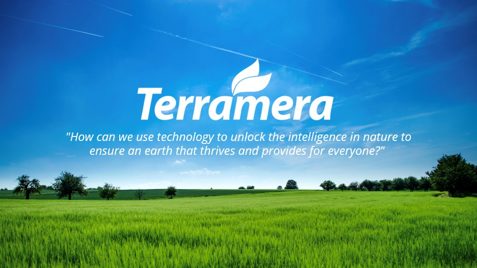
Company / Product Context
Developed and deployed machine-vision capabilities for plant-health and pesticide-treatment applications using high-resolution robotic imagery.
My Mission
Stabilize image quality across changing illumination, align plant time series, detect plants and quantify growth/damage over time.
- Optimized camera, optics, lighting and adaptive ISP exposure/color behavior for robotic plant imaging.
- Implemented denoising, brightness/contrast enhancement and plant segmentation pipelines.
- Registered plant-image time series using feature, correlation, optical-flow and rigid/non-rigid methods.
- Built background estimation, change detection and cumulative damage/growth quantification for near-real-time monitoring.
Core Stack
Sample STAR Project — Illumination-Robust Plant Health Monitoring
Situation
Robotic plant imaging had to compare plants over time even though illumination, exposure, viewpoint, growth, and scene content changed between acquisitions.
Task
Stabilize image quality and alignment so plant growth, disease/insect damage, and pesticide-treatment effects could be detected and quantified consistently across time.
Action
Tuned camera/optics/lighting and ISP exposure/color behavior; applied denoising, brightness analysis and CLAHE; registered time-series imagery using feature matching, correlation, optical flow, and rigid/non-rigid methods; built adaptive background models and filtered illumination-induced changes before cumulative analysis.
Result
Created a near-real-time processing workflow that separated true plant changes from acquisition variability and supported longitudinal growth/damage monitoring in real-world conditions.
Engineering Deep Dive — Problem -> approach -> implementation evidence
Image acquisition
Lighting, lens/optics, camera and ISP tuning for varying illumination.
Preprocessing
Non-local means, bilateral filtering, brightness statistics and CLAHE.
Temporal registration
SIFT/ORB/SURF + homography, correlation, optical flow, rigid and non-rigid registration.
Change analysis
Adaptive background modeling, background subtraction, illumination filtering and cumulative growth/damage analysis.
Deployment
Integrated into a plant-health monitoring and inspection system with near-real-time operation and real-world robustness.
Retail Robotics & Shelf Analytics
Advanced Computer Vision Engineer
Zebra Technologies | Mississauga, ON | Jan. 2019 - Feb. 2021
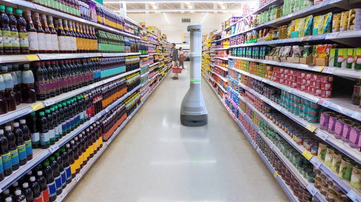
Company / Product Context
Worked on a robotic machine-vision system for retail shelf monitoring and analytics, including Zebra EMA50 autonomous scanning-robot workflows.
My Mission
Combine high-resolution 2D imagery, 3D point clouds and deep-learning models to detect shelf structure, products, gaps and store-scene semantics for near-real-time retail analytics.
- Optimized imaging hardware/ISP and image enhancement for retail environments with glare, shadows and variable lighting.
- Processed and registered 3D point clouds with high-resolution 2D imagery to detect shelf planes, product spaces and out-of-stock gaps.
- Fine-tuned SSD MobileNet, Faster R-CNN, Mask R-CNN and YOLO models for price labels, shelves, product gaps and related objects.
- Contributed to an issued patent application on gap detection in support structures with peg regions.
Core Stack
Sample STAR Project — 2D/3D Retail Shelf Gap Detection
Situation
An autonomous retail robot needed to identify shelf structure, products, price labels, and out-of-stock gaps from wide-FOV imagery and 3D data in stores with glare, shadows, clutter, and changing viewpoints.
Task
Fuse 2D and 3D perception into a robust shelf-analytics pipeline suitable for near-real-time robotic operation.
Action
Enhanced high-resolution imagery, corrected and analyzed point clouds, detected shelf planes and product spaces, registered 3D data to 2D images, and fine-tuned SSD MobileNet, Faster R-CNN, Mask R-CNN, and YOLO models; evaluated deployment trade-offs including OpenVINO/Intel Neural Compute.
Result
Integrated the vision capabilities into the EMA50 retail-monitoring workflow and contributed to the patented gap-detection approach for support structures with peg regions.
Engineering Deep Dive — Problem -> approach -> implementation evidence
2D image processing
Denoising, glare/shadow reduction and contrast enhancement.
3D vision
Point-cloud distortion correction, shelf-plane detection, product-space/gap detection and 2D/3D registration.
Deep learning
Detection of price labels, shelves and product gaps; aisle scene segmentation/classification; end-to-end ML lifecycle and deployment trade-offs.
Deployment
Integrated CV pipelines into EMA50 retail-store monitoring/analytics robot with near-real-time, robust operation.
Industrial Cameras & ISP
Machine Vision Research Engineer
FLIR / Teledyne | Richmond, BC | Aug. 2017 - Dec. 2018
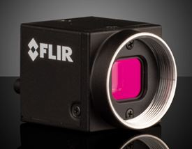
Replace this inline illustration with a company/product image when desired.
Company / Product Context
Developed, tested and integrated camera ISP algorithms for mono, color and polarization industrial cameras, while building CV/DL demonstrations for industrial automation.
My Mission
Improve sensor output fidelity and demonstrate how industrial cameras, ISP processing and AI inference can solve real machine-vision problems.
- Developed real-time ISP modules for high-speed industrial imaging and tuned sensor/ISP stages for changing illumination.
- Supported robotic camera-PCB programming by troubleshooting vision-system calibration and improving calibration algorithms/processes.
- Demonstrated camera performance for object detection, defect inspection, metrology and 3D reconstruction.
- Integrated algorithms with FLIR vision-camera Spinnaker API and deployed/tested near-real-time vision applications.
Core Stack
Sample STAR Project — Industrial Camera ISP and Edge-Vision Demonstration
Situation
Industrial camera customers required high-fidelity imagery and dependable CV results across mono, color, and polarization sensors operating under changing lighting and high-speed acquisition conditions.
Task
Improve the camera/ISP pipeline and demonstrate that the imaging improvements translated into practical machine-vision value.
Action
Developed and tuned real-time ISP modules and sensor parameters, supported camera-PCB programming/calibration, integrated algorithms through the Spinnaker API, and built demonstrations for detection, inspection, metrology, 3D reconstruction, and edge inference using OpenVINO/Intel Neural Compute and FLIR Firefly.
Result
Produced integrated camera-and-vision demonstrations that connected sensor/ISP optimization directly to near-real-time industrial automation use cases and customer-facing technical evaluation.
Engineering Deep Dive — Problem -> approach -> implementation evidence
Camera/ISP
Industrial imaging hardware evaluation, adaptive exposure, sensor calibration and ISP pipeline development.
CV demonstrations
Image processing, object detection, defect inspection, metrology and 3D-reconstruction demonstrations.
Edge AI
Adapted object/face detection models and optimized inference for OpenVINO, Intel Neural Compute Stick and FLIR Firefly camera.
Integration
Integrated developed algorithms with camera SDKs/COTS and FLIR Spinnaker API; tested and maintained real-world systems.
Clinical Forecasting & Active Learning
Machine Learning Research Associate (Contract)
Ottawa Hospital Research Institute / University of Ottawa | Ottawa, ON | May 2016 - Jul. 2017
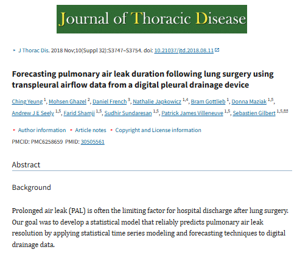
Replace this inline illustration with a company/product image when desired.
Company / Product Context
Researched statistical and machine-learning models for post-lung-surgery chest-tube management and for reducing dimensionality/redundancy in active learning under class imbalance.
My Mission
Develop clinically useful forecasting models and more computationally efficient active-learning methods, then validate and publish the results.
- Developed forecasting models for chest-tube air-leak flow, removal timing and patient discharge-related decision support.
- Designed dimensionality/redundancy reduction and pre-filtering methods to improve active learning for imbalanced one-class classification.
- Published the clinical forecasting work in the Journal of Thoracic Disease.
- Presented active-learning research at the Canadian Conference on Artificial Intelligence.
Core Stack
Sample STAR Project — Post-Surgery Air-Leak Forecasting
Situation
After lung surgery, clinicians needed better use of digital pleural-drainage time-series data to estimate air-leak duration and support chest-tube removal and discharge-related decisions.
Task
Develop and evaluate forecasting methods that converted noisy clinical airflow measurements into useful predictions.
Action
Analyzed transpleural airflow time series, designed adaptive statistical forecasting approaches, evaluated model behavior against clinical outcomes, and worked through the research lifecycle from algorithm development and validation to scientific writing.
Result
The work produced a clinically focused forecasting methodology and was published in the Journal of Thoracic Disease, demonstrating the translation of quantitative modeling into decision-support research.
Engineering Deep Dive — Problem -> approach -> implementation evidence
Clinical time series
Adaptive statistical forecasting of air-leak flow and earliest safe chest-tube removal time after lung surgery.
Active learning
Dimensionality reduction, redundancy reduction and pre-filtering of unlabeled data for imbalanced/one-class classification.
Research lifecycle
Algorithm development, evaluation, scientific writing and peer-reviewed dissemination.
3D Foot Measurement & Custom Manufacturing
Computer Vision Engineer
FitMyFoot | Vancouver, BC | Sep. 2015 - Apr. 2016
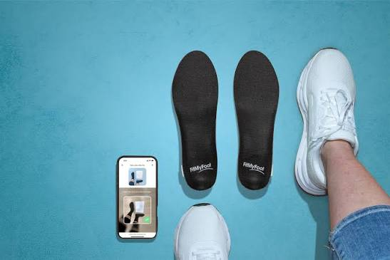
Company / Product Context
Worked on a machine-vision system that extracted foot measurements and 3D information from user-acquired smartphone imagery for custom-fit footwear manufacturing.
My Mission
Turn consumer foot photos into reliable measurements and geometry that could feed an automated cloud-to-3D-printing manufacturing workflow.
- Developed and deployed CV/ML pipelines for foot detection, measurement and 3D modeling from smartphone imagery.
- Implemented segmentation/classification, object detection, skin detection, feature matching/tracking, enhancement, edge/line detection and illumination-invariant background subtraction.
- Integrated vision subsystems into an automated cloud workflow for acquisition, preprocessing, measurements, 3D model generation and 3D printing.
Core Stack
Sample STAR Project — Smartphone-to-3D Foot Measurement Pipeline
Situation
A custom-footwear workflow had to extract dependable foot measurements and 3D information from consumer smartphone photos, where acquisition conditions were far less controlled than a traditional metrology setup.
Task
Turn ordinary user-acquired images into stable geometry and measurements suitable for downstream custom-fit manufacturing.
Action
Developed foot/skin segmentation, feature extraction and tracking, image enhancement, edge/line detection, illumination-invariant background subtraction, measurement extraction, and 3D modeling components; integrated them with cloud processing and the 3D-printing workflow.
Result
Established an end-to-end machine-vision path from smartphone imagery to measurements and 3D information used by the automated custom-footwear production process.
Engineering Deep Dive — Problem -> approach -> implementation evidence
Vision pipeline
Foot segmentation, skin detection, feature extraction/matching/tracking, image enhancement, edge/line detection and background subtraction.
Measurement & 3D
Extraction of foot measurements and generation of geometry for custom-fit footwear.
System integration
Integrated vision subsystems with cloud-based processing and 3D-printing workflow.
Remote Sensing, SAR/InSAR & Aerial Video
Research Analyst
MDA Space | Richmond, BC, Canada | Sep. 2007 - Aug. 2014
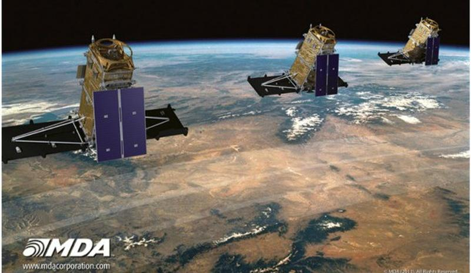
Replace this inline illustration with a company/product image when desired.
Company / Product Context
Contributed to R&D projects using SAR/InSAR, optical satellite imagery, full-motion video and LiDAR for civilian, infrastructure, search-and-rescue and security applications.
My Mission
Develop algorithms that turn complex geospatial imagery/video into change maps, targets, deformation measurements, 3D models and actionable analytics.
- Developed SAR/optical change-detection and data-fusion approaches for agriculture, soil/vegetation monitoring and infrastructure/environmental analysis.
- Worked on target detection and search-and-rescue applications, including ships and crashed-aircraft detection in Arctic imagery.
- Built full-motion-video calibration, stabilization, mosaicking, structure-from-motion 3D reconstruction, change detection and people/vehicle activity analysis.
- Published/presented multiple papers and technical reports spanning aerial video, SAR search and rescue, polarimetric change detection and automatic target cueing.
Core Stack
Sample STAR Project — Multi-Sensor Geospatial Change and Target Analysis
Situation
Civilian, infrastructure, search-and-rescue, and security applications required actionable information from heterogeneous SAR/InSAR, optical satellite, LiDAR, and full-motion-video data.
Task
Develop algorithms that could detect meaningful change or targets while handling different sensor physics, viewpoints, motion, georegistration error, and large-area data.
Action
Built SAR/optical change-detection and fusion methods, target-cueing/search-and-rescue analyses, InSAR deformation monitoring, and full-motion-video calibration, stabilization, mosaicking, Structure-from-Motion reconstruction, repeat-pass change detection, and people/vehicle activity analysis.
Result
Delivered reusable R&D capabilities across multiple geospatial applications and disseminated the work through peer-reviewed papers, conference presentations, and Defence Research and Development Canada technical reports.
Engineering Deep Dive — Problem -> approach -> implementation evidence
Satellite imagery
SAR/InSAR and optical imagery; change detection, target detection, infrastructure deformation monitoring and SAR/optical fusion.
Full-motion video
Video calibration, stabilization, feature registration/mosaicking, Structure from Motion, repeat-pass change analysis and activity recognition.
Scientific delivery
R&D algorithm development, customer/application studies, peer-reviewed publications and technical reports.
Medical Imaging - Brain MRI
Post-Doctorate Research Fellow
UBC - Electrical & Computer Engineering | Vancouver, BC, Canada | Sept. 2004 - Aug. 2007
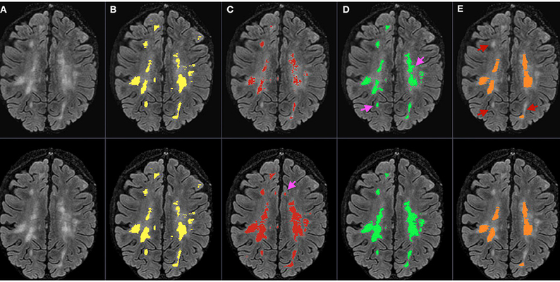
Replace this inline illustration with a company/product image when desired.
Company / Product Context
Researched and published computer-vision methods for detecting and quantifying multiple-sclerosis lesions from longitudinal brain MRI, while also supporting undergraduate ECE teaching.
My Mission
Develop and evaluate automated MRI registration, segmentation and lesion-detection methods that could improve computer-aided analysis of multiple sclerosis.
- Developed automated pipelines for MRI time-series segmentation and non-rigid registration using ITK.
- Investigated MS lesion detection using statistical anomaly detection, optimal-filter design, feature engineering and clustering.
- Worked with medical professionals to improve the computer-aided analysis workflow.
- Published and presented peer-reviewed research on MS-lesion segmentation.
Core Stack
Sample STAR Project — Longitudinal Multiple-Sclerosis Lesion Analysis
Situation
Longitudinal brain MRI studies required reliable detection and quantification of multiple-sclerosis lesions despite patient motion, anatomical variability, image-registration error, and subtle lesion appearance.
Task
Develop computer-aided methods that aligned serial MRI scans and detected lesion-related abnormalities for quantitative analysis.
Action
Implemented ITK-based segmentation and non-rigid registration, then investigated statistical anomaly detection, optimal-filter design, feature engineering, clustering, and texture-based lesion segmentation; collaborated with medical professionals to refine the analysis approach.
Result
Produced and evaluated automated MRI-analysis methods and published/presented peer-reviewed research on multiple-sclerosis lesion segmentation.
Engineering Deep Dive — Problem -> approach -> implementation evidence
Medical imaging
Longitudinal brain-MRI preprocessing, segmentation, registration and lesion quantification.
Algorithms
Statistical anomaly detection, optimal filter design, feature engineering and clustering.
Teaching
Assisted undergraduate courses in digital signal processing/communications, digital image processing and engineering design.